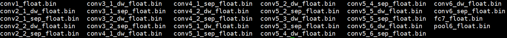

4. 应用开发
4.1. 简介
本章节介绍了在地平线平台进行应用开发，将转换得到的模型部署运行起来，需要您注意的相关注意事项在此章节也会介绍。
注意
在应用开发前请，请确保您已经通过 环境部署 部分的介绍完成了开发环境的准备。
最简易的开发过程包括工程创建、工程实现、工程编译与运行三个阶段。 考虑到实际业务场景开发的较复杂需求，对于常用的多模型控制概念和应用调优建议也都提供了一些说明。
4.2. 工程创建
地平线推荐使用cmake进行应用工程管理，前文介绍的环境部署部分也已经完成了cmake安装。 在阅读本节内容前，我们希望您已经了解cmake的使用。
地平线开发库提供了arm的依赖环境和板端应用程序。我们在Docker镜像中提供的工程依赖信息如下：
地平线评测库libdnn.so，路径：~/.horizon/ddk/xj3_aarch64/dnn/lib/。
地平线编译器依赖 libhbrt_bernoulli_aarch64.so，路径：~/.horizon/ddk/xj3_aarch64/dnn/lib/。
地平线 xj3 芯片系统依赖，路径：~/.horizon/ddk/xj3_aarch64/appsdk/appuser/。
c编译器 aarch64-linux-gnu-gcc。
c++编译器 aarch64-linux-gnu-g++。
创建一个工程用户需要编写CMakeLists.txt文件。 脚本中定义了编译工具路径，CMakeLists.txt文件中定义了一些编译选项，以及依赖库、头文件的路径。参考如下：
cmake_minimum_required(VERSION 2.8)
project(your_project_name)
set(CMAKE_CXX_FLAGS "${CMAKE_CXX_FLAGS} -std=c++11")
set(CMAKE_CXX_FLAGS_DEBUG " -Wall -Werror -g -O0 ")
set(CMAKE_C_FLAGS_DEBUG " -Wall -Werror -g -O0 ")
set(CMAKE_CXX_FLAGS_RELEASE " -Wall -Werror -O3 ")
set(CMAKE_C_FLAGS_RELEASE " -Wall -Werror -O3 ")
if (NOT CMAKE_BUILD_TYPE)
set(CMAKE_BUILD_TYPE Release)
endif ()
message(STATUS "Build type: ${CMAKE_BUILD_TYPE}")
# define dnn lib path
set(DNN_PATH "~/.horizon/ddk/xj3_aarch64/dnn/")
set(APPSDK_PATH "~/.horizon/ddk/xj3_aarch64/appsdk/appuser/")
set(DNN_LIB_PATH ${DNN_PATH}/lib)
set(APPSDK_LIB_PATH ${APPSDK_PATH}/lib/hbbpu)
set(BPU_libs dnn cnn_intf hbrt_bernoulli_aarch64)
include_directories(${DNN_PATH}/include
${APPSDK_PATH}/include)
link_directories(${DNN_LIB_PATH}
${APPSDK_PATH}/lib/hbbpu
${APPSDK_PATH}/lib)
add_executable(user_app main.cc)
target_link_libraries(user_app
${BPU_libs}
pthread
rt
dl)
注意在以上示例中，我们没有指定编译器位置，会在配合工程编译阶段补充编译器指定，请参考 工程编译与运行 小节部分的介绍。
4.3. 工程实现
工程实现主要介绍如何将前文模型转换得到的bin模型在地平线平台运行起来。 最简单的步骤应该包括模型加载、准备输入数据、准备输出内存、推理和结果解析，以下是一份简单的加载部署模型参考代码：
#include <iostream>
#include "dnn/hb_dnn.h"
#include "dnn/hb_sys.h"
int main(int argc, char **argv) {
// 第一步加载模型
hbPackedDNNHandle_t packed_dnn_handle;
const char* model_file_name= "./mobilenetv1.bin";
hbDNNInitializeFromFiles(&packed_dnn_handle, &model_file_name, 1);
// 第二步获取模型名称
const char **model_name_list;
int model_count = 0;
hbDNNGetModelNameList(&model_name_list, &model_count, packed_dnn_handle);
// 第三步获取dnn_handle
hbDNNHandle_t dnn_handle;
hbDNNGetModelHandle(&dnn_handle, packed_dnn_handle, model_name_list[0]);
// 第四步准备输入数据
hbDNNTensor input;
hbDNNTensorProperties input_properties;
hbDNNGetInputTensorProperties(&input_properties, dnn_handle, 0);
input.properties = input_properties;
auto &mem = input.sysMem[0];
int yuv_length = 224 * 224 * 3;
hbSysAllocCachedMem(&mem, yuv_length);
//memcpy(mem.virAddr, yuv_data, yuv_length);
//hbSysFlushMem(&mem, HB_SYS_MEM_CACHE_CLEAN);
// 第五步准备模型输出数据的空间
int output_count;
hbDNNGetOutputCount(&output_count, dnn_handle);
hbDNNTensor *output = new hbDNNTensor[output_count];
for (int i = 0; i < output_count; i++) {
hbDNNTensorProperties &output_properties = output[i].properties;
hbDNNGetOutputTensorProperties(&output_properties, dnn_handle, i);
// 获取模型输出尺寸
int out_aligned_size = 4;
for (int j = 0; j < output_properties.alignedShape.numDimensions; j++) {
out_aligned_size =
out_aligned_size * output_properties.alignedShape.dimensionSize[j];
}
hbSysMem &mem = output[i].sysMem[0];
hbSysAllocCachedMem(&mem, out_aligned_size);
}
// 第六步推理模型
hbDNNTaskHandle_t task_handle = nullptr;
hbDNNInferCtrlParam infer_ctrl_param;
HB_DNN_INITIALIZE_INFER_CTRL_PARAM(&infer_ctrl_param);
hbDNNInfer(&task_handle,
&output,
&input,
dnn_handle,
&infer_ctrl_param);
// 第七步等待任务结束
hbDNNWaitTaskDone(task_handle, 0);
//第八步解析模型输出，例子就获取mobilenetv1的top1分类
float max_prob = -1.0;
int max_prob_type_id = 0;
hbSysFlushMem(&(output->sysMem[0]), HB_SYS_MEM_CACHE_INVALIDATE);
float *scores = reinterpret_cast<float *>(output->sysMem[0].virAddr);
int *shape = output->properties.validShape.dimensionSize;
for (auto i = 0; i < shape[1] * shape[2] * shape[3]; i++) {
if(scores[i] < max_prob)
continue;
max_prob = scores[i];
max_prob_type_id = i;
}
std::cout << "max id: " << max_prob_type_id << std::endl;
// 释放内存
hbSysFreeMem(&(input.sysMem[0]));
hbSysFreeMem(&(output->sysMem[0]));
// 释放模型
hbDNNRelease(packed_dnn_handle);
return 0;
}
示例代码中，为了缩减篇幅，对于部分数据就直接使用了已知的常数。
在实际使用过程中，您应该通过 hbDNNGetInputTensorProperties/hbDNNGetOutputTensorProperties
等接口获取尺寸和数据类型等信息。
需要您注意的是，在输入数据准备阶段，我们注释掉了一段 memcpy 代码。
这里应当是根据模型的输入格式要求准备输入样本，并将其拷贝到 input.sysMem[0] 中，
前文转换配置中的 input_type_rt 和 input_layout_rt 参数共同决定了模型使用什么样的输入，
具体信息可以参考 转换内部过程解读 部分的介绍。
更加全面的工程实现指导，请您参考 《BPU SDK API手册》。
4.4. 工程编译与运行
结合 工程创建 一节中的cmake工程配置，参考编译脚本如下：
# define gcc path for arm
LINARO_GCC_ROOT=/opt/gcc-linaro-6.5.0-2018.12-x86_64_aarch64-linux-gnu/
DIR=$(cd "$(dirname "$0")";pwd)
export CC=${LINARO_GCC_ROOT}/bin/aarch64-linux-gnu-gcc
export CXX=${LINARO_GCC_ROOT}/bin/aarch64-linux-gnu-g++
rm -rf build_arm
mkdir build_arm
cd build_arm
cmake ${DIR}
make -j8
根据 第2章：环境部署 部分的指引，您的开发机中应该已经安装有相应编译器，将上述脚本中的编译器配置指定为您的安装项目即可。
arm程序拷贝到地平线开发板上可运行，注意程序依赖的文件也需要一同拷贝到开发板，并在启动脚本中配置依赖。
例如我们的示例程序依赖库有：libhbrt_bernoulli_aarch64.so、libdnn.so，
这两个依赖库在本地的位置为：~/.horizon/ddk/xj3_aarch64/dnn/lib/，需要将之上传到板子的运行环境中。
建议在板端的 /userdata 路径下新建 lib 路径并将库传送至该目录下，则在板端运行程序前，需指定的依赖库路径信息如下：
export LD_LIBRARY_PATH=$LD_LIBRARY_PATH:/userdata/lib
4.5. 多模型控制策略
多模型场景中，每个模型都需要使用有限的计算资源完成推理，不可避免地会出现计算资源地争夺情况。 为了便于您控制多模型的执行，地平线提供了模型优先级的控制策略供您使用。
4.5.1. 模型优先级控制
XJ3芯片BPU计算单元硬件本身没有任务抢占功能，对于每一个推理任务，一旦它进到BPU模型计算之后， 在该任务执行完成之前都会一直占用BPU，其他任务只能排队等待。 此时很容易出现BPU计算资源被一个大模型推理任务所独占，进而影响其他高优先级模型的推理任务执行。 针对这种问题，Runtime SDK基于模型的优先级通过软件的方式实现了BPU资源抢占的功能。
其中有以下点需要被关注：
编译后的数据指令模型在BPU上进行推理计算时，它将表现为1个或者多个function-call 的调用，其中function-call是BPU的执行粒度， 多个function-call调用任务将在BPU的硬件队列上按序进行调度，当一个模型所有的function-call都执行完成， 那么一个模型推理任务也就执行完成了。
基于上述描述，BPU模型任务抢占粒度设计为function-call更为简单，即BPU执行完一个function-call之后，暂时挂起当前模型， 然后切入执行另外一个模型，当新模型执行完成之后，再恢复原来模型的状态继续运行。但是这里存在两个问题， 第一是经过编译器编译出来的模型function-call都是merge在一起，此时模型只有一个大的function-call，它无法被抢占； 第二是每个function-call的执行时间比较长或者不固定，也会造成抢占时机不固定，影响抢占效果。
为了解决上述的两个问题，地平线在模型转换工具和系统软件都给予了支持，下面分别介绍其实现原理和操作方法：
首先，在 模型转换 阶段，可以在模型的YAML配置文件中的编译器相关参数（即
compiler_parameters）中， 通过max_time_per_fc参数（以微秒为单位，默认取值为0，即不做限制。）来设置每个function-call的执行时间。 假设某function-call执行时间为10ms，如将其max_time_per_fc设置为500， 则这个function-call将会被拆分成20个。其次，系统软件层面设计了
BPLAT_CORELIMIT环境变量用于设置可抢占的粒度。 如将此参数设置为2，则高优先级被调度执行的时间为前面2个低优先级function-call的处理时间。 如果为0，则不抢占。因此，为了尽早执行高优先级的任务，可在 上板 时，先运行export BPLAT_CORELIMIT=1将此环境变量的取值设置为1。 这样当系统底层收到模型的function-call时，会判断其优先级，对于优先级高的function-call则放入单独队列，以便能够在一个function-call 执行完成之后，抢占到BPU资源。接着，由于模型抢占机制是在libdnn中实现的，继续设置
dnn的infer接口提供的hbDNNInferCtrlParam.priority参数。如：配置infer任务为HB_DNN_PRIORITY_PREEMP(255)，则为抢占任务，可支持function-call级别抢占； 您也可以配置优先级为[0,255]的任意等级，在同等条件下的执行队列中(粒度为任务)，优先级越高的task会更优先执行。 需要说明的是，目前DNN内部最多支持8个任务同时进行。因此若提交抢占任务时已经有8个任务正在运行，则不支持抢占操作。 直到有任务完成后才可以调度优先级最高的任务执行。
4.6. 应用调优建议
地平线建议的应用调优策略包括工程任务调度和算法任务整合两个方面。
工程任务调度 方面，我们推荐您使用一些workflow调度管理工具，充分发挥不同任务阶段的并行能力。 一般AI应用可以简单拆分为输入前处理、模型推理、输出后处理三个阶段，在简易流程下，其处理流程如下图。

充分利用workflow管理实现不同任务阶段并行后，理想的任务处理流程将达到下图效果。

地平线推荐的workflow管理工具是xstream，具体使用请参考《XStream算法SDK开发框架》。
当然，XStream也不是必选的，您如果有自研的或者其他更加熟悉的workflow管理策略，也可以根据自己的实际需要选取。
算法任务整合 方面，地平线推荐您使用多任务模型。 这样一方面可以在一定程度上避免多模型调度管理的困难； 另一方面多任务模型也能充分共享主干网络的计算量，较于使用各个独立的模型，可以在整个AI应用级别明显减少计算量，从而达到更高的整体性能。 在地平线内部和许多合作客户的业务实践中，多任务也是常见的应用级优化策略。
4.7. 其他应用开发工具
4.7.1. hrt_bin_dump 工具
输入参数描述
编号 |
参数 |
类型 |
描述 |
说明 |
1 |
|
string |
模型文件路径。 |
必须为debug model。 即模型的编译参数 |
2 |
|
string |
输入文件路径。 |
模型的输入文件，支持 IMG类型文件需为二进制文件（后缀必须为.bin），二进制文件的大小应与模型的输入信息相匹配， 如：YUV444文件大小为 \(height * width * 3\)； TENSOR类型文件需为二进制文件或文本文件（后缀必须为.bin/.txt），二进制文件的大小应与模型的输入信息相匹配， 文本文件的大小必须大于模型要求的输入大小，多余的数据会被丢弃；每个输入之间通过逗号分隔，如：模型有两个输入， 则： |
3 |
|
string |
模型卷积层配置文件。 |
模型layer配置文件，配置文件中标明了模型各层信息，在模型编译过程中生成。文件名称一般为：
|
4 |
|
string |
工具输出路径。 |
工具的输出路径，该路径应为合法路径。 |
使用说明
工具提供dump卷积层输出功能，输出文件为二进制文件。
直接运行 hrt_bin_dump 获取工具使用详情。
参见下代码块：
注解
以下代码块所示命令行输出可能随工具版本不同有所差异，此处仅为示例。
Usage:
hrt_bin_dump [Option...] [Parameter]
[Option] [Parameter]
---------------------------------------------------------------------------------------------------
--model_file [string]: Model file path, model must be debug model.
--conv_mapping_file [string]: conv mapping file path, json file.
--input_file [string]: Input file paths, separate by comma, each represents one input.
The extension of files should be one of [bin, txt].
bin for binary such as image data, nv12 or yuv444 etc.
txt for plain data such as image info.
--conv_dump_path [string]: output path of conv output file
[Examples]
---------------------------------------------------------------------------------------------------
hrt_bin_dump
--model_file
--input_file
--conv_mapping_file
--conv_dump_path
示例
以mobilenetv1的debug模型为例，创建outputs文件夹，执行以下命令：
./hrt_bin_dump --model_file=./mobilenetv1_hybrid_horizonrt.bin --conv_mapping_file=./mobilenetv1_quantized_model_conv_output_map.json --conv_dump_path=./outputs --input_file=./zebra_cls.bin
运行日志参见以下截图：

在路径 outputs/ 文件夹下可以查看输出，参见以下截图：
4.7.2. hrt_model_exec 工具
工具简介
hrt_model_exec 是一个模型执行工具，可直接在开发板上评测模型的推理性能、获取模型信息。
一方面可以让用户拿到模型时实际了解模型真实性能；
另一方面也可以帮助用户了解模型可以做到的速度极限，对于应用调优的目标极限具有指导意义。
hrt_model_exec 工具分别提供了模型推理 infer、模型性能分析 perf 和查看模型信息 model_info 三类功能，
如下表：
编号 |
子命令 |
说明 |
1 |
|
获取模型信息，如：模型的输入输出信息等。 |
2 |
|
执行模型推理，获取模型推理结果。 |
3 |
|
执行模型性能分析，获取性能分析结果。 |
输入参数描述
编号 |
参数 |
类型 |
说明 |
1 |
|
string |
模型文件路径，多个路径可通过逗号分隔。 |
2 |
|
string |
指定模型中某个模型的名称。 |
3 |
|
int |
指定运行核。 |
4 |
|
string |
模型输入信息，多个可通过逗号分隔。 |
5 |
|
bool |
使能分类后处理。 |
6 |
|
bool |
使能dump模型输入和输出。 |
7 |
|
string |
dump模型输入和输出的格式。 |
8 |
|
int |
控制txt格式输出float型数据的小数点位数。 |
9 |
|
int |
控制txt格式输入输出的换行规则。 |
10 |
|
string |
模型性能/调度性能统计数据的保存路径。 |
11 |
|
int |
执行模型运行帧数。 |
12 |
|
int |
执行模型运行时间。 |
13 |
|
int |
指定程序运行线程数。 |
使用说明
工具提供三类功能：模型信息获取、单帧推理功能、多帧性能评测。
运行 hrt_model_exec 、hrt_model_exec -h 或 hrt_model_exec --help 获取工具使用详情。
如下代码块中所示：
注解
以下代码块所示命令行输出可能随工具版本不同有所差异，此处仅为示例。
Usage:
hrt_model_exec [Option...] [Parameter]
[Option] [Parameter]
---------------------------------------------------------------------------------------------------------------
--model_file [string]: Model file paths, separate by comma, each represents one model file path.
--model_name [string]: Model name.
When model_file has one more model and Subcommand is infer or perf,
"model_name" must be specified!
--core_id [int] : core id, 0 for any core, 1 for core 0, 2 for core 1.
--input_file [string]: Input file paths, separate by comma, each represents one input.
The extension of files should be one of [jpg, JPG, jpeg, JPEG, png, PNG, bin, txt]
bin for binary such as image data, nv12 or yuv444 etc.
txt for plain data such as image info.
--enable_cls_post_process [bool] : flag for classification post process, only for ptq model now.
Subcommand must be infer.
--enable_dump [bool] : flag for dump infer output. The default is false. Subcommand must be infer.
--dump_format [string]: output dump format, only support [bin, txt]. The default is bin.
Subcommand must be infer.
--dump_txt_axis [int] : The txt file of dump is expanded according to the specified axis;
the default is 4, which means there is only one data per line
(for 4-dimensional data); Subcommand must be perf, dump_format must be txt
--profile_path [string]: profile log path, set to get detail information of model execution.
--frame_count [int] : frame count for run loop, default 200, valid when perf_time is 0.
Subcommand must be perf.
--perf_time [int] : minute, perf time for run loop, default 0.
Subcommand must be perf.
--thread_num [int] : thread num for run loop, thread_num range:[0,8],
if thread_num > 8, set thread_num = 8. Subcommand must be perf.
[Examples]
---------------------------------------------------------------------------------------------------------------
hrt_model_exec model_info | hrt_model_exec infer | hrt_model_exec perf
--model_file | --model_file | --model_file
--model_name | --model_name | --model_name
| --core_id | --core_id
| --input_file | --frame_count
| --enable_cls_post_process | --perf_time
| --enable_dump | --thread_num
| --dump_format | --profile_path
| --dump_txt_axis |
4.7.2.1. model_info 子命令
该参数用于获取模型信息，模型支持范围：ptq模型。该参数与 model_file 一起使用，用于获取模型的详细信息，
信息包括：模型输入输出信息 hbDNNTensorProperties 以及模型的分段信息 stage, 分段信息是指；一张图片可以分多个阶段进行推理，stage 信息为 [x1, y1, x2, y2]，分别为图片推理的左上角和右下角坐标，目前地平线J5的芯片架构支持这类分段模型的推理，xj3上模型均为1个 stage。
不指定 model_name 输出模型中所有模型信息，指定 model_name 则只输出对应模型的信息。
示例
单模型
hrt_model_exec model_info --model_file=xxx.bin
多模型（输出所有模型信息）
hrt_model_exec model_info --model_file=xxx.bin,xxx.bin
多模型--pack模型（输出指定模型信息）
hrt_model_exec model_info --model_file=xxx.bin --model_name=xx
4.7.2.2. infer 子命令
概述
该参数用于模型推理，用户自定义输入图片，推理一帧。
该参数需要与 input_file 一起使用，指定输入图片路径，工具根据模型信息resize图片，整理模型输入信息。
程序单线程运行单帧数据，输出模型运行的时间。
示例
单模型
hrt_model_exec infer --model_file=xxx.bin --input_file=xxx.jpg
多模型
hrt_model_exec infer --model_file=xxx.bin,xxx.bin --model_name=xx --input_file=xxx.jpg
可选参数
参数 |
说明 |
|
指定模型推理的核id， |
|
使能分类后处理，目前只支持ptq分类模型，默认 |
|
dump模型输出数据，默认 |
|
dump模型输出文件的类型，可选参数为 |
|
dump模型txt格式输出的换行规则；若输出维度为n，则参数范围为 |
4.7.2.3. perf 子命令
概述
该参数用于测试模型性能。 该模式下，用户无需输入数据，程序根据模型信息自动构造输入tensor，tensor数据为随机数。 程序默认单线程运行200帧数据，当指定perf_time参数时，frame_count参数失效，程序会执行指定时间后退出。 输出模型运行的latency、以及帧率信息。程序每200帧打印一次性能信息： latency的最大、最小、平均值，不足200帧程序运行结束打印一次。
程序最后输出running相关数据， 包括：程序线程数、帧数、模型推理总时间，模型推理平均latency，帧率信息。
示例
单模型
hrt_model_exec perf --model_file=xxx.bin
多模型
hrt_model_exec perf --model_file=xxx.bin,xxx.bin --model_name=xx
可选参数
参数 |
说明 |
|---|---|
|
指定推理核id。 |
|
设置 |
|
设置 |
|
设置程序运行线程数，范围[1, 8], 默认值 |
|
统计工具日志产生路径，运行产生profiler.log，分析op耗时和调度耗时 |
多线程Latency数据说明
多线程的目的是为了充分利用BPU资源，多线程共同处理 frame_count 帧数据或执行perf_time时间，直至数据处理完成/执行时间结束程序结束。
在多线程 perf 过程中可以执行以下命令，实时获取BPU资源占用率情况。
hrut_somstatus -n 10000 –d 1
输出见以下截图：

注解
在 perf 模式下，单线程的latency时间表示模型的实测上板性能，
而多线程的latency数据表示的是每个线程的模型单帧处理时间，
相对于单线程的时间要长，但是多线程的总体处理时间减少，其帧率是提升的。
多输入模型说明
工具 infer 推理功能支持多输入模型的推理，支持图片输入、二进制文件输入以及文本文件输入，输入数据用逗号隔开。
模型的输入信息可以通过 model_info 进行查看。
示例
hrt_model_exec infer --model_file=xxx.bin --input_file=xxx.jpg,input.txt
重复输入
若重复指定参数输入，则会发生参数覆盖的情况，例如获取模型信息时重复指定了两个模型文件，则会取后面指定的参数输入 yyy.bin：
hrt_model_exec model_info --model_file=xxx.bin --model_file=yyy.bin
若重复指定输入时，未加命令行参–model_file，则会取命令行参数后面的值，未加参数的不识别，
例如下例会忽略 yyy.bin，参数值为 xxx.bin：
hrt_model_exec model_info --model_file=xxx.bin yyy.bin
其他命令行参数的重复输入情况以此类推。
input_file 子命令：图片类型的输入，其文件名后缀必须为 bin / JPG / JPEG / jpg / jpeg 中的一种，
feature输入后缀名必须为 bin / txt 中的一种。
每个输入之间需要用英文字符的逗号隔开 ,，如： xxx.jpg,input.txt。
profile_path 子命令：profile日志文件产生目录。
该参数通过设置环境变量 HB_DNN_PROFILER_LOG_PATH 查看模型运行过程中OP以及任务调度耗时。
一般设置 --profile_path="." 即可，代表在当前目录下生成日志文件，日志文件为profiler.log。
enable_cls_post_process
使能分类后处理。
子命令为 infer 时配合使用，目前只支持ptq分类模型的后处理，为 true 时打印分类结果。
参见下图：

4.8. 常见问题
4.8.1. 如何将摄像头输出的NV12图片转换为BGR等格式？
地平线X/J3芯片未提供图片像素空间转换的加速硬件，因此有部分客户提出希望通过API接口来开放BPU对像素空间转换进行加速。 但是为了规避BPU的模型推理效率被该功能影响，经过地平线研发团队缜密评估后，决定暂不对用户开放。
但是在ARM CPU上，用户也可以利用开源的libYUV库来加速该操作。 经过测试验证，720P的图像，NV12转BGR，转换延迟低于7ms，满足大部分业务场景需求。
针对libYUV库，您也可以自行利用linaro_gcc-6.5.0交叉编译工具链进行编译，或在地平线社区平台上寻求帮助， 我们可以开放地平线优化过的libyuv内部版本的源码和预编译库，或直接在我们开放的AI Express组件开源源码中获取： https://github.com/HorizonRobotics-Platform/AI-EXPRESS/tree/master/deps/libyuv/include/libyuv。
4.8.2. 如何理解BPU内存Cache
在BPU SDK API文档中，我们提供了BPU内存函数 hbSysAllocCachedMem 和 hbSysAllocMem 来分配BPU读写内存。
其中 hbSysAllocCachedMem 表示分配可以被cache的内存，
并配套了 hbSysFlushMem 函数来对Cache进行刷新。
Cache机制是由芯片BPU的Bernoulli内存架构来决定的，详细参考如下图所示。 CPU与主存之间存在的Cache会缓存数据，而BPU与主存之间则没有cache。 此时若错误使用Cache将会直接影响最终数据读写的准确性和效率。

对于CPU写场景，即输入给BPU读的内存，由于数据会缓存到Cache中，导致memory主存中的数据仍是旧的， 这样BPU执行模型的时候取的数据就是错的。因此CPU写完Memory以后需要主动把Cache中的数据flush到memory中。
对于BPU写场景，即BPU中模型输出的内存。如果CPU曾经读取过memory中的数据，那么数据就有可能会被缓存到Cache中。 这时如果BPU重新写了该Memory，那么CPU 在读取数据时仍然会先读取Cache，这样就会导致CPU读到错误的数据。 所以在BPU写完Memory以后需要把Cache中上次读取到的数据清理掉。
对于CPU写，如果仅用于BPU读，不用于后续其他场景读，推荐直接设置为非Cacheable，这样可以规避一次flush过程。
对于BPU写，如果仅被CPU读过一次，那么也可以设置非Cacheable。 但是如果会被读取多次，例如模型输出，则建议设置为Cacheable，加速CPU反复读的效率。
4.8.3. 理解BPU内存中的物理地址和虚拟地址
在Bernoulli芯片架构中，BPU和CPU共享同一个memory空间，通过 hbSysAllocMem 函数可以分配一段物理空间连续的内存用于BPU读写。
函数返回值被包装在 hbSysMem 数据结构体中，它内部有 phyAddr 和 virAddr 两个字段分别表示其内存空间的物理地址和虚拟地址。
由于这段内存空间是连续的，所以物理地址和虚拟地址都可以通过首地址进行表示，也可以对相应的内存进行读写。
但是在实际使用过程中，建议以使用 hbSysMem 的虚拟地址为主，非必须场景不要直接使用物理地址。